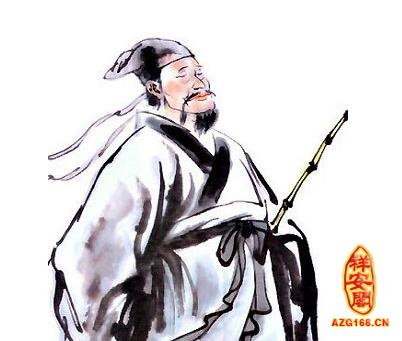

【林半仙傳奇】 |
|  |
| 古人說：「一命、二運、三風水、四積陰德、五讀書。」可見風水的重要，遠勝過積陰德、讀書。在台灣堪輿界享有盛名，由唐山渡海來台的堪輿名師中，北有林瑯仙，中有蝨母仙，南有林半仙，三人皆以看風水成名。而其中以南部的林半仙最為傳奇，以下所講是有關林半仙的風水奇談。 話說清朝乾隆初年，福建泉州有一個姓林的地理師。他堪輿的技術十分高明，稱他為林半仙。泉州府的總兵胡文海，耳聞林半仙的大名，想起自己的父親死在臺灣，埋葬在高雄縣林園鄉的鳳鼻頭，淪為異鄉的孤魂，至今仍然沒有一個像樣的墳墓，自己現在已貴為總兵，應該把父親的屍骨搬回故鄉安葬，以盡人子的孝道。於是便請林半仙同自己的母舅，來台灣搬運自己父親的骨骸。 當他二人來到鳳鼻頭時，林半仙坐在墳上端詳了一會，然後站起來左顧右盼，瞻前顧後。忍不住的拍手，說：「哎，這風水葬對了！這是一座真正龍穴。動不得！總兵的官位就是這裡蔭出來的。胡總兵的母舅聽了，覺得好笑，便用諷刺的口吻說：「若這墳墓是真龍正穴，那天下所有墳墓都是龍穴了。」「的確是真正龍穴！錯了，我林半仙三個字倒過來寫！」林半仙臉紅、脖子粗的爭辯著。「半仙，我老實告訴你吧!我姊丈由老家來到臺灣，在漁船上替人牽了一輩子網，還是窮光蛋一個，死了連一副薄薄的棺材都買不起，只好由我同姊姊用一條草蓆包了抬到這裡，隨便挖了個洞把他埋了，既沒挑好日子，也沒請地理師，如果說這是真正龍穴，那我們不是活神仙了嗎？我看你趁早把林半仙三字倒寫過來？」林半仙一聽他那麼一說，更加證明自己的判斷沒錯，馬上繼續說道：「那就對了！這個風水就是耍軟葬，如果你用棺材裝了屍體，便是硬葬。那還能出總兵呢？」 胡總兵的母舅見林半仙聽自己說用草蓆不用棺材埋葬，便說軟葬才對，只會應和他的話，因此認為林半仙只是一張江湖嘴，一點本事也沒有！於是便無奈的說道。「你別油腔滑調，就是真正龍穴，且要軟葬，今天我也要挖出來帶回老家。」林半仙知道他懷疑自己的功力，回答說：「既然這樣，我林半仙敬謝不敏，再見!」 胡總兵的母舅眼看林半仙憤怒離去，也沒有半點挽留的意思，第二天便請人把骸骨掘起，帶回福建。不久，消息傳來胡總兵母舅所乘的那隻船在臺灣海峽沉沒了，他和他姊夫的骸骨都沉在海底。跟著胡總兵官兒也垮了，因此鬱鬱成疾，不久便與世長辭。 林半仙沒錢回福建省，便流浪在高雄鳳山附近，好幾天沒吃飯，饑寒交迫。一天，經過一家門口，見那家正在吃中飯，不由貪婪望了一眼。「先生，請進來一起吃飯。」那家主人見林半仙面有飢色，殷勤的招呼。林半仙正饑餓得饞涎欲滴的時候，聽到這親切的招呼聲，便搭訕著走進去，說：「多謝！多謝！只是素不相識，怎麼好意思打擾。」「別客氣，請坐。不過沒什麼菜，只是蕃薯湯罷了，先生肯賞光，就感到非常榮幸了。」這家主人謙虛的說，同時盛了一碗蕃薯湯給他。林半仙流落異鄉，舉目無親，在飢寒交迫下，得到這真誠的款待，感動得流下淚來。「你們這裏的用水很困難嗎？」林半仙吃完蕃薯湯後。看到他們汲水時，拉著長長的繩子。半天才汲一桶上來，心裡有所感觸的問道。「的確如此，這裏地勢高，遇到天旱，只有用這死方法，不然，莊稼就沒辦法種了。」主人溫順的說，顯得樂天知命。「你們的心地善良，我來替你們求水吧！使你們今後有源源不絕的泉水來灌溉。」林半仙說。「哦！那太好了！不知怎樣求法？」主人欣喜若狂的說。「你們在對面的山腰擺起香案，準備一副牲禮祭品，一把桃木劍，鹽、米、水各一碗，讓我來作法。不過，水來了的時侯。你們要往外跑，跑得越遠越好。」林半仙這樣吩咐著。主人半信半疑的告訴左右鄰居，鄰居們雖然也不相信，但對林半仙所需用的東西，却全部準備妥當。 第二天。林半仙披髮持劍，站在擺滿牲禮的香案前，先拈香跪拜，嘴中念念有詞，將鹽、米、東一把西一把的撒。接著左手端水，右手執劍，向水碗作畫符狀。畫完了又向空中指畫。然後口含符水，向空中連噴數口，隨著把木劍向山腰插了下去，一股泉水真的就從地下湧出來。「哦！水來了!真靈驗!」 農人們發出歡呼聲，就按著指示，拼命的向海邊跑去，直到跑得全身淋漓大汗，才在港仔埔、潭仔、林內附近停了下來，泉水也就跟他們流到這裏。 如此一來，林半仙聲名遠播。遠近的人競相請他堪輿覓穴，絡繹不絕。林半仙坐在轎子裏，被抬來抬去，應接不暇。 一天，有個姓廖的窮人，請林半仙替他尋個富貴發財的風水。林半仙很同情他的困境，便同他到山上去勘察。二人翻山越嶺，磨破腳底，仔細地到處眺望各地山巒形勢。 有一天，來到一個小山上。林伴仙把山巒地形。反覆左右端詳後，突然驚叫起來，說：「啊！找到了。」「好地嗎？先生！」姓廖的高興的問道。林半仙點了點頭，說：「是，這是「美女獻花」和「金盆富貴」穴。」「什麼是美女獻花？」姓廖疑問地問道。「就是這風水的名稱，你看這山坡由那裡下來。像不像一個椅枕仰臥的美人？」林半仙用手指山坡的上端說。「阿！真像，那兩個突起的小坡就像一對乳房。二姓廖的似乎也瞧出了一點眉頭，附會的說。林半仙指著山巒繼續解釋，說：「唔！你看，我們站的地方便是正穴，「花」，山坡由此分成兩支，向左右分開，蜿蜒而下，復向內彎。就是大腿，那腿彎處一個凹池。就是金盆子。這風水葬對了。一定出舉人、發大財。」「那得請先生多多幫忙，我先謝謝先生了。姓廖鞠躬的說。「對不起，這風水我不敢做。」林半仙推辭的說。姓廖的聽到林半仙不肯幫這個忙，這可急了，連忙跪在地下，哭著說：「先生，你帶我跑了半天。好不容易找到一個好風水。怎麼又不替我做呢？」「不是我不肯替你做，實在是這風水不好做，做不對，不但不發財，而且你會窮困一輩子。做對了，你雖然會富貴一輩子，但我的眼睛又會瞎掉。」林半仙解釋地說「先生，請不要顧慮這些，只要把風水做對了，你就是廖家的大恩人，眼睛瞎了，我就把你當父親一樣的看待。請先生無論如何幫這個忙。」姓廖的苦苦哀求地說。「好吧!我就犧牲這兩隻眼睛，替你做好這風水。」林半仙無可奈何的說。「謝謝先生！謝謝先生！」姓廖的趴在地下叩頭一番。自從做了那口風水以後， 姓廖的，家境一天一天的好起來，不到二年便成為當地的首富，第三年他一個十八歲的兒子居然也考中了鳳山開科的舉人，真是富貴雙全了。如此一來，把奉養在家裏的林半仙，敬之如神明，孝之勝於父母，天天穿著錦衣羅緞，吃著大魚大肉，林半仙也儼然以廖家恩人自居，予取予求，梢不如意就大聲喝罵，誇耀功績。姓廖的雖有所聞，心中雖然不滿，但也不與他計較，但忍耐是有一個限度的，日子一久，也對他開始冷淡，侍候和衣、食不若從前，甚至漸漸怠慢。林半仙對這種待遇，很敏感，當然他也不是傻瓜，知道自己雙眼瞎了，一切都得依靠別人。若一味同他爭吵，說不定他會不睬自己，甚至於把自己趕出去，最後吃虧的還是自己。於是他的態度變了，變得非常沉默，一切都逆來順受，與先前氣勢凌人的態勢判若兩人。一天，晚飯的時侯有一盤羊肉。這是林半仙最喜歡吃的，已經很久沒有吃到它了。大概好久沒吃了，他覺得今晚的羊肉特別好吃。吃飽了，躺在椅上，一面剔牙，一面撫摸飽飽的肚皮。 心想，最近沒跟他們吵鬧。他們待我又好起來了，真是和氣萬事通，以後準此原則去做，準沒錯。」過了一會，婢女來收拾碗筷，林半仙便開玩笑的問：「今晚的羊肉誰燒的？燒得真好，火候剛好。味道又濃，非常適口。」 婢女平時見林半仙氣勢飛揚，對他沒有什麼好感。現在聽他心滿意足的話，益覺得討厭，便冷冷說道：「大概多了一股臭屎味吧！」甚麼！」林半仙驚惶的問道，還懷疑自己的耳朵聽錯了呢？「屎臭味！這隻羊是死在廁所裏，別人都不敢吃，你却吃得津有味。」林半仙聽了，好像受到難於忍受的凌辱，把剛才自我陶醉的心情變成一鼓憤怒的火燄。心想「好一個忘恩負義的狗東西，竟用這樣卑鄙的手段來作弄我這個瞎子！」氣得鼻孔生煙，胸腔欲炸。等那婢女離開後，他安靜思考，報復手段。 忽然，他想起了甚麼似的，用手重重的拍椅子上，說：「哎呀！我真傻，為什麼不這做呢？」隔了不久，他與姓廖的閒聊時，談到祖墳時，林半仙說：「那風水好是好，但也逐漸遭到破壞了，須要再修理，不然你的家財和舉人，就保不住了。」林半仙說。「先生怎麼知道呢?」姓廖的有點懷疑問。「這是我的心血結晶。怎會不知道呢？你叫人去墳墓看看，便知道它每天一到午時便會隆隆作響」 姓廖的還是不相信，便自己親身去探看。一連幾天，每天果然聽到墓裡有「隆隆」的聲音。於是又請林半仙挑好日子，準備牲禮祭品，抬著林半仙去修墳。林半仙到了墓前，照例祭告天地、跪拜，然後持劍唸咒，撒鹽、撒米，然後跳到凹處的「金盆子」，把桃木劍插在凹處上，一股泉水立刻從插處冒出。林半仙掬來洗臉，兩眼立刻復明，離開了。 姓廖的一見這種情形，曉得風水已經遭到破壞，不由大聲一叫：「完了！完了！」便暈倒過去。此後，姓廖的家境就如江河日下，舉人也垮了。一家人又像從前一樣之過著窮困的生活。林半仙破壞了金盆穴後。想到自己在廖家的處境，心猶未甘，又想將美女獻花破壞。有一天，他碰到一位賣豆腐花的年青人，知道他家裡很窮，尚未娶妻，便把他叫住，說：「少年阿！你想不想娶老婆。想的話，我替你做媒，不用錢。」「別開玩笑啦！想有什麼用？誰肯把女兒送給我這窮鬼。」賣豆腐花的苦笑地說。「不是開玩笑，我教你一個法子。」林半仙正經的說，「明天午時正，你到美人山。在姓廖的墳墓前作一個性交的樣子，然後將豆腐花倒在他墳墓背上，不久，就會有一個美麗的女人來找你。你不用懷疑，我是頂頂大名的林半仙。」賣豆腐花的早就聽到林半仙的大名，所以相信他。完全照著林半仙的話去做。廖家的美女獻花風水也被破壞了，此後廖家的婦女變得十分淫暢，稍大一點的女孩子就會向男人「獻花」。其中有一個最美麗的，就和這個賣豆花的年輕人搭上，後來肚子弄大了，嫁給他。 |
【林半仙傳奇】-網頁製作心得 |
3年2班張簡澤丞 |
|
林半仙心得:我覺得林半仙是一位非常厲害的人，令我非常的佩服他，雖然因為剪刀穴的事件也害死了許多林園人，但是他也做了許多的好事，例如在清水巖裡因為製造出靈泉池，林半仙還有許多的英勇事蹟，我會喜歡他是因為我覺得他非常的厲害，也熱心助人，但是他後來的事情讓我非常的討厭他因為他的剪刀穴事件，讓古代的林園人死傷許多。 |
|